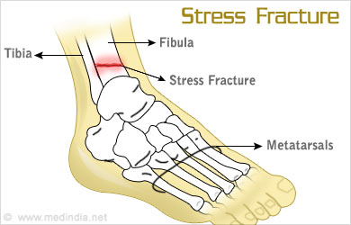

Stress fracture

SYMPTOMS:
The symptoms of a stress fracture can include:
- Pain, swelling or aching at the site of fracture.
-
Tenderness or “pinpoint pain” when touched on the bone.
-
Pain that begins after starting an activity and then resolves with rest.
-
Pain that’s present throughout the activity and does not go away after the activity has ended.
-
Pain which occurs while at rest, during normal activity or with everyday walking.
-
Pain which is worse with hopping on one leg or an inability to shift weight/hop on affected leg/foot.
CAUSES
Risk factors for stress fractures can be divided into two basic categories: extrinsic and intrinsic.
Extrinsic factors happen outside of the body. These can also be called environmental (nature) factors. These factors can include:
- Practicing incorrect training or sport technique.
-
Having too rapid of a training program or volume of activity or changing your activity level without a gradual break-in period.
-
Changing the surface you exercise on, such as going from a soft surface (like an indoor track) to outside on gravel or concrete.
-
Running on a track or road with sloped surface.
-
Using poor equipment or improper footwear (shoes that are too worn out, too flimsy or too stiff).
-
Doing repetitive activity in certain high-impact sports, such as:
-
Long-distance running (tibia, hip).
-
Basketball.
-
Tennis.
-
Track and field.
-
Gymnastics (wrist stress fractures from weight bearing on hands/wrists, low back).
-
Dance (feet, low back).
-
Having a poor diet that has inadequate caloric intake for volume of sport.
-
Having a low vitamin D level.
-
Experiencing early specialization in sports.
- Youth who play one sport year-round without a break are at risk of stress fractures.
Intrinsic factors are things that are related to the athlete or patient and aren’t impacted by outside forces. These factors can include:
- Age: Older athletes may have underlying bone density issues such as osteoporosis. Already weakened bone will develop a stress reaction and/or fracture sooner than healthy bone.
-
Weight: Both ends of the spectrum seem to be at risk for stress injuries. Someone with a low BMI or underweight individual may have weakened bones and someone with a high BMI doing repetitive loading with their body weight would also be at risk for injuries.
-
Anatomy: Foot problems can affect the way the foot strikes the ground. These foot problems can include bunions, blisters, tendonitis, and low or high arches. Muscle weakness, imbalances or lack of flexibility can also be a factor.
-
Sex: Females may be at risk if they have irregular menstrual periods or no periods.
-
Medical conditions: Osteoporosis or other diseases that weaken bone strength and density (thickness). The weak or soft bones may not be able to handle the changes in activity.
DIAGNOSIS
Your doctor may need to do several tests to see if you have a stress fracture and the severity of the fracture. These tests can include:
- Physical examination: During your first visit, your doctor will do a physical exam and discuss your risk factors for developing a stress fracture. When discussing risk factors, you will be asked about
-
X-Rays: Your doctor may order an X-Ray to look for a fracture. However, a stress fracture can be difficult to see on an X-Ray because the bone often appears normal and the small cracks can’t be seen on the image. X-rays actually miss about ⅔ of stress fractures. X-Rays may not help diagnose a stress fracture unless it has started to heal. When the bone starts to heal, it creates a callus, or lump, that can be seen on X-Rays. With a high index of suspicion for a stress fracture, your doctor may recommend an imaging test that is more sensitive than an X-Ray and will pick up a stress reaction even before it may become a stress fracture.
-
Bone scan: A bone scan may be used to see stress fractures that cannot be seen on an X-Ray. During a bone scan, a tracer (a radioactive substance) is injected into your bloodstream. The tracer collects in the bone and settles in the areas where the bone is being repaired. The area that is affected by a stress fracture will appear darker on the bone scan that an uninjured area.
-
Magnetic resonance imaging (MRI): When your doctor needs very detailed images of the injury, an MRI may be used. Magnetic resonance imaging (MRI) is a test that uses a large magnet, radio waves and a computer to produce very clear images of the human body.
TREATMENT
- Stopping the activity that is causing pain. Stress fractures happen because of repetitive stress and overuse, so it’s important to avoid the activity that led to the fracture.
-
Applying an ice pack (10 minutes) or ice massage (ice cube rub for three to five minutes) to the injured area.
-
Resting for roughly two to eight weeks.
-
Cross training by doing non-impact exercise (like a using a pool or bike) after discussion with your doctor may be allowed.
- Eventually, once you can perform low-impact activities for extended periods without pain, you can start doing high-impact exercises. Often, physical therapy can be very helpful in returning to activities and making adjustments to avoid reinjury.
-
Adjusting your position if there is swelling in your leg, ankle or foot. You can lessen the swelling by elevating your leg — raising your foot above the level of your heart — while you’re lying on your back.
-
Taking nonsteroidal anti-inflammatory medicines to help relieve pain and swelling.
-
Using protective footwear to reduce stress on your foot or leg. This may be stiff-soled shoe, a wooden-soled sandal, or a post-op shoe which has a rigid sole.
-
Using crutches to keep weight off your foot or leg until the bone heals.